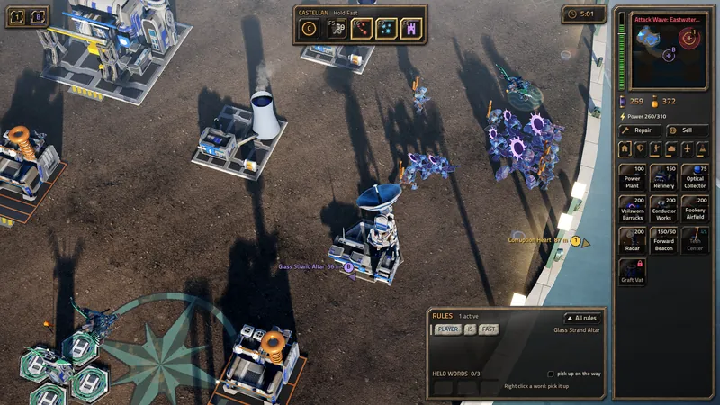

Castellan
Construction Yard“Walls first. Then the army. Then the world.”
- Structures are built one at a time from the sidebar and placed when ready, within reach of the Construction Yard.
- Harvesters drive out to the Void Matter and haul it home to the Refinery; factories train units in queues.
- A Radar opens Tech 2 and a Tech Center Tech 3. When the front moves, the Yard packs up and moves with it.
- Hold Fast: your structures have 30% more health and shield, and the Yard fires on anything that comes too close.
Powers: Tithe Wagon · Bombardment · Flak Curtain · Last Bastion